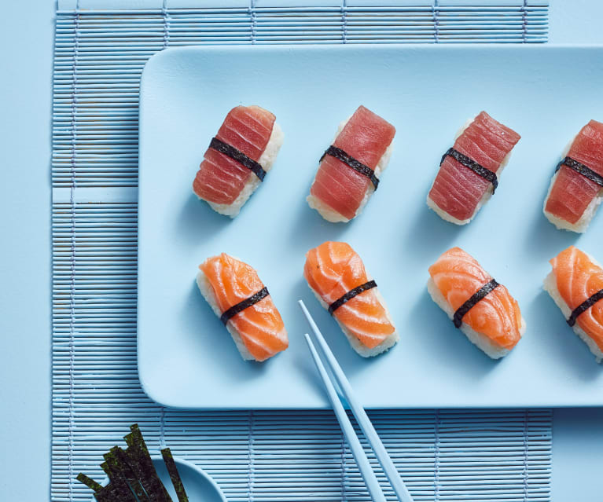

Sushi one of the most famous and delicious food out there. Sushi usually consists of 1 kind of fish with a small amount of sushi sticky rice that is wrapped. There are different kind of sushis, the most famous one rolls and the second most famous one Nigiri.
Sushi rolls are ususally made with a large piece of seaweed with rice and chopped up fish. Then the chief would roll it up with a bamboo rolling mat. Some examples are the california roll, salmon rolls and tuna rolls.
Sushi rolls are ususally made with a large piece of seaweed with rice and chopped up fish. Then the chief would roll it up with a bamboo rolling mat. Some examples are the california roll, salmon rolls and tuna rolls.
The next famous one would be the Nigiri, which is my favorite type of sushi. This type of sushi is made with a topping ussually fish and is served on top of sushi rice. Some example of Nigiri are the Salmon Nigiri and the Spicy Tuna Nigiri.